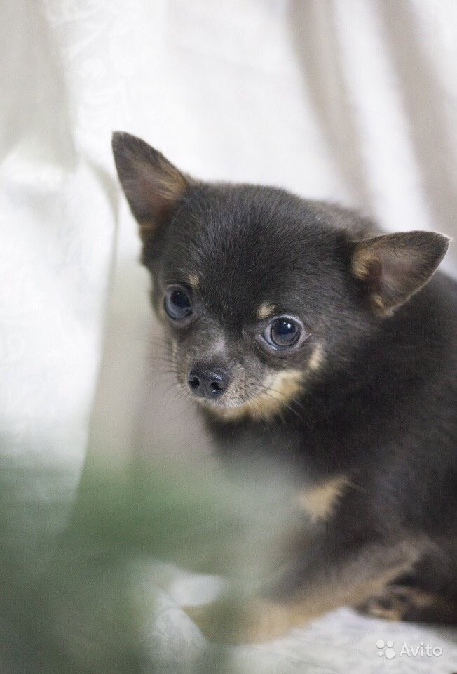

Приветстувю вас на моей странице
надеюсь, вам не будет скучно
Позвольте представиться:
меня зовут Рикки. Я люблю
ссать по углам кушать индейку и спать со своей хозяйкой
Терпеть не могу
гостей, улицу и пакеты с мусором
А для тех, кто еще не знает, как я выгляжу – вот моя фотография

Я ненавижу
техно
Можете поискать меня в инстаграмме моей хозяйки
@istrovapolza
или написать мне письмо на
aamironova@stud.eltech.ru
Страница песика-невротика
10 ресурсов по digital–меркетингу
Необычные петербургские дворы